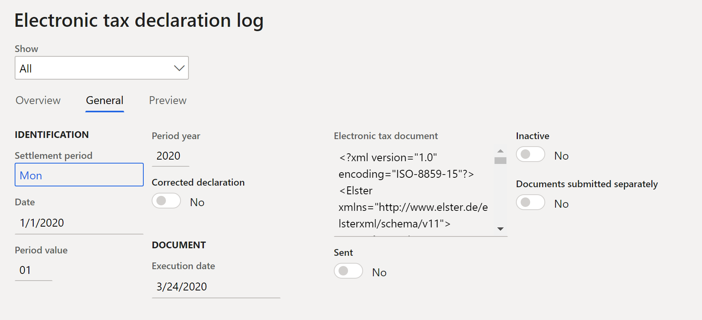

Umsatzsteuererklärung für Deutschland
Important
Dynamics 365 for Finance and Operations hat sich zu speziell entwickelten Anwendungen entwickelt, mit denen Sie bestimmte Geschäftsfunktionen verwalten können. Weitere Informationen zu diesen Änderungen finden Sie im Dynamics 365-Lizenzierungshandbuch.
In diesem Thema wird erläutert, wie Sie die Mehrwertsteuererklärung für juristische Personen in Deutschland einrichten und erstellen.
Weitere Informationen zur Einrichtung der Mehrwertsteuererklärung finden Sie unter MwSt-Berichterstattung für Europa.
Mehrwertsteuer-Codes für Mehrwertsteuererklärung einrichten
Richten Sie die Codes für die Mehrwertsteuererklärung ein, indem Sie die Anweisungen in Mehrwertsteuer-Erklärungscodes einrichten befolgen. Die folgende Tabelle enthält ein Beispiel für Umsatzsteuer-Berichtscodes für Deutschland.
|
Code |
Beschreibung |
Element in der XML-Datei der Umsatzsteuererklärung |
Steuerbemessungsgrundlage oder Steuerbetrag |
|
Steuerfreier Verkauf mit Vorsteuerabzug für innergemeinschaftliche Lieferungen (§ 4, Nr. 1b des UStG [Umsatzsteuergesetz]) |
|||
|
41 |
Innergemeinschaftlicher Versand (§4, Nr. 1b des UStG) für Kunden mit Steuerregistrierung. |
Kz41 |
Steuerbasis |
|
44 |
Innergemeinschaftliche Lieferungen von Neufahrzeugen an Kunden ohne Umsatzsteuer-Identifikationsnummer. |
Kz44 |
Steuerbasis |
|
49 |
Innergemeinschaftliche Lieferungen von Neufahrzeugen außerhalb eines Unternehmens. |
Kz49 |
Steuerbasis |
|
43 |
Zusätzliche steuerfreie Verkäufe mit Vorsteuerabzug (z. B. Exporte). |
Kz43 |
Steuerbasis |
|
Steuerfreie Verkäufe ohne Vorsteuerabzug (z. B. Verkäufe nach §4, Nr. 8 bis 28 des UStG) |
|||
|
48 |
Steuerfreier Verkauf ohne Vorsteuerabzug. |
Kz48 |
Steuerbasis |
|
Steuerpflichtiger Umsatz |
|||
|
81 |
Steuerbemessungsgrundlage für Lieferungen oder Leistungen, die mit 19 Prozent berechnet werden. |
Kz81 |
Steuerbasis |
|
181 |
Steuerbetrag für Lieferungen oder Leistungen, die mit 19 Prozent berechnet werden. |
Wird in der XML-Datei nicht separat angezeigt, aber insgesamt berücksichtigt (Kz83) |
USt.-Betrag |
|
86 |
Steuerbemessungsgrundlage für Lieferungen oder Leistungen, die mit 7 Prozent berechnet werden. |
Kz86 |
Steuerbasis |
|
186 |
Steuerbetrag für Lieferungen oder Leistungen, die mit 7 Prozent berechnet werden. |
Wird in der XML-Datei nicht separat angezeigt, aber insgesamt berücksichtigt (Kz83) |
USt.-Betrag |
|
35 |
Steuerbemessungsgrundlage für Lieferungen oder Leistungen zu anderen Steuersätzen. |
Kz35 |
Steuerbasis |
|
36 |
Steuerbetrag für Lieferungen oder Leistungen zu anderen Steuersätzen. |
Kz36 |
USt.-Betrag |
|
77 |
Lieferungen von land- und forstwirtschaftlichen Betrieben nach §24 des UStG an Kunden mit einer Umsatzsteuer-Identifikationsnummer. |
Kz77 |
Steuerbasis |
|
76 |
Steuerbemessungsgrundlage des Umsatzes, für den die Steuer zu zahlen ist §24 des UStG (Sägewerksprodukte, Getränke und alkoholische Getränke wie Wein). |
Kz76 |
Steuerbasis |
|
80 |
Steuerbetrag des Umsatzes, für den die Steuer zu zahlen ist §24 des UStG (Sägewerksprodukte, Getränke und alkoholische Getränke wie Wein). |
Kz80 |
USt.-Betrag |
|
Innergemeinschaftliche Akquisitionen und Mehrwertsteuer für solche Akquisitionen |
|||
|
91 |
Steuerfreie innergemeinschaftliche Akquisitionen. |
Kz91 |
Steuerbasis |
|
89 |
Steuerbemessungsgrundlage für den Erwerb von Waren aus Ländern der Europäischen Union (EU) von 19 Prozent. |
Kz89 |
Steuerbasis |
|
189 |
Steuerbetrag für den Erwerb von Waren aus Ländern der Europäischen Union (EU) von 19 Prozent. |
Wird in der XML-Datei nicht separat angezeigt, aber insgesamt berücksichtigt (Kz83) |
USt.-Betrag |
|
93 |
Steuerbemessungsgrundlage für den Erwerb von Waren aus Ländern der Europäischen Union (EU) von 7 Prozent. |
Kz93 |
Steuerbasis |
|
193 |
Steuerbetrag für den Erwerb von Waren aus Ländern der Europäischen Union (EU) von 7 Prozent. |
Wird in der XML-Datei nicht separat angezeigt, aber insgesamt berücksichtigt (Kz83) |
USt.-Betrag |
|
95 |
Steuerbemessungsgrundlage für den Erwerb von Waren aus Ländern der Europäischen Union (EU) zu anderen Steuersätzen. |
Kz95 |
Steuerbasis |
|
98 |
Steuerbetrag für den Erwerb von Waren aus Ländern der Europäischen Union (EU) zu anderen Steuersätzen. |
Kz98 |
USt.-Betrag |
|
94 |
Steuerbemessungsgrundlage für innergemeinschaftliche Anschaffungen neuer Fahrzeuge (§1b, Absätze 2 und 3 des UStG) von Lieferanten ohne MwSt.-ID zum allgemeinen Steuersatz. |
Kz94 |
Steuerbasis |
|
96 |
Steuerbetrag für innergemeinschaftliche Anschaffungen neuer Fahrzeuge (§1b, Absätze 2 und 3 des UStG) von Lieferanten ohne MwSt.-ID zum allgemeinen Steuersatz. |
Kz96 |
USt.-Betrag |
|
Zusätzliche Informationen zum Vertrieb |
|||
|
42 |
Lieferungen des ersten Kunden für gemeinschaftsinterne Dreieckstransaktionen (§25b des UStG). |
Kz42 |
Steuerbasis |
|
60 |
Steuerpflichtiger Umsatz des ausführenden Unternehmers, für den der Leistungsempfänger die Steuer schuldet, gemäß §13b (5) des UStG. |
Kz60 |
Steuerbasis |
|
21 |
Sonstige nicht steuerpflichtige Dienstleistungen gemäß §18b, Satz 1, Nr. 2 des UStG. |
Kz21 |
Steuerbasis |
|
45 |
Sonstige nicht steuerpflichtige Verkäufe (wenn der Erfüllungsort nicht in Deutschland liegt). |
Kz45 |
Steuerbasis |
|
Begünstigter als Steuerschuldner (§13b des UStG) |
|||
|
46 |
Steuerbemessungsgrundlage für sonstige Leistungen gemäß §3A (2) UStG eines Unternehmers, der sich im Rest der Gemeinde befindet (§13b (1) des UStG). |
Kz46 |
Steuerbasis |
|
47 |
Steuerbetrag für sonstige Leistungen gemäß §3A (2) UStG eines Unternehmers, der sich im Rest der Gemeinde befindet (§13b (1) des UStG). |
Kz47 |
USt.-Betrag |
|
73 |
Steuerbemessungsgrundlage des Umsatzes, der unter das Grundsteuergesetz fällt – insbesondere Lieferungen von Grundstücken, für die sich der ausführende Unternehmer für eine Steuerschuld gemäß §9 (3) des UStG entschieden hat. |
Kz73 |
Steuerbasis |
|
74 |
Steuerbetrag des Umsatzes, der unter das Grundsteuergesetz fällt – insbesondere Lieferungen von Grundstücken, für die sich der ausführende Unternehmer für eine Steuerschuld gemäß §9 (3) des UStG entschieden hat. |
Kz74 |
USt.-Betrag |
|
84 |
Steuerbemessungsgrundlage für andere Dienstleistungen (§13b (2), Nr. 1, 2 und 4 bis 11 des UStG). |
Kz84 |
Steuerbasis |
|
85 |
Steuerbetrag für andere Dienstleistungen (§13b (2), Nr. 1, 2 und 4 bis 11 des UStG). |
Kz85 |
USt.-Betrag |
|
Abzugsfähige Vorsteuerbeträge |
|||
|
66 |
Steuer auf Eingaben aus Rechnungen anderer Unternehmen (§15, Absatz 1, Nr. 1 des UStG). |
Kz66 |
USt.-Betrag |
|
61 |
Vorsteuerbetrag aus innergemeinschaftlichen Erwerb von Gegenständen (§15, Absatz 1, Nr. 3 des UStG). |
Kz61 |
USt.-Betrag |
|
62 |
Anfallender Umsatzsteuerimport(§15, Absatz 1, Nr. 2 des UStG). |
Kz62 |
USt.-Betrag |
|
67 |
Vorsteuerbeträge aus Dienstleistungen im Sinne von §13b des UStG (§15, Absatz 1, Klausel 1, Nr. 4 des UStG). |
Kz67 |
USt.-Betrag |
|
63 |
Vorsteuerbeträge, die nach allgemeinen Durchschnittssätzen berechnet werden (§23 und §23A des UStG). |
Kz63 |
USt.-Betrag |
|
64 |
Korrektur des Vorsteuerabzugs (§15A des UStG). |
Kz64 |
USt.-Betrag |
|
59 |
Vorsteuerabzug für innergemeinschaftliche Lieferungen neuer Fahrzeuge außerhalb eines Unternehmens (§2A des UStG) und Kleinunternehmen im Sinne von §19 (1) des UStG (§15 (4A) des UStG). |
Kz59 |
USt.-Betrag |
|
Sonstige Steuerbeträge |
|||
|
65 |
Steuern aufgrund von Änderungen in der Form der Besteuerung und Nachsteuer auf besteuerte Anzahlungen usw. aufgrund von Änderungen des Steuersatzes. |
Kz65 |
USt.-Betrag |
|
69 |
Steuerbeträge, die auf Rechnungen falsch oder unplausibel ausgewiesen sind (§14c des UStG) sowie Steuerbeträge, die in Übereinstimmung mit §6A (4), Satz 2; §17 (1), Satz 6 und §25b (2) des UStG geschuldet sind oder geschuldete Steuerbeträge von einem Outsourcer oder Lagerhalter gemäß §13A (2) 1, Nr. 6 des UStG. |
Kz69 |
USt.-Betrag |
|
39 |
Abzug der vereinbarten Sondervorauszahlung für eine langfristige Verlängerung (die in der Regel erst in der letzten Vorankündigung des Steuerzeitraums erfolgt). |
Kz39 |
USt.-Betrag |
|
83 |
Gesamtbetrag der Mehrwertsteuer (Mehrwertsteuer-Vorauszahlung oder Mehrwertsteuerüberschuss). Bei der Umsatzsteuererklärung im XML-Format wird der Wert in diesem Feld automatisch als Summe der Berichtscodes 181, 186, 36, 80, 189, 193, 98, 96, 47, 74 und 85 abzüglich der Berichtscodes 66, 61, 62, 67, 63, 64, 59, 69 und 39 berechnet. |
Kz83 |
USt.-Betrag |
Note
Beispiele für Formen von Mehrwertsteuererklärungen, die Deklarationszeilencodes enthalten, finden Sie unter Formulare im Mehrwertsteuerverfahren für das Jahr 2020.
Mehrwertsteuercodes einrichten
Richten Sie die Codes für die Mehrwertsteuererklärung ein, indem Sie die Anweisungen in Mehrwertsteuercodes für MwSt-Berichterstattung und Mehrwertsteuerübersicht befolgen.
Note
In einer deutschen juristischen Entität sollten Umsatzsteuerkennzeichen für steuerfreie Verkäufe nach folgenden Regeln eingerichtet werden:
- Der Steuersatz beträgt mehr als 0 (Null).
- Das Steuerkennzeichen ist als Befreit auf der Umsatzsteuergruppen-Seite gekennzeichnet.
Erstellen einer Umsatzsteuererklärung im XML-Format
In Microsoft Dynamics Lifecycle Services (LCS), in der Bibliothek der freigegebenen Anlagen laden Sie die neuesten Versionen der Konfigurationen für die elektronische Berichterstattung (ER) für das Format der Umsatzsteuererklärung herunter:
- Elster (DE)
Weitere Informationen finden Sie unter Elektronische Berichtskonfigurationen aus Lifecycle Services herunterladen.
Wechseln Sie zu Steuer > Einstellungen > Mehrwertsteuer > Mehrwertsteuer-Erklärungscodes.
Im Feld Formatzuordnung wählen Sie das Format Elster (DE) aus, das Sie zuvor heruntergeladen haben.
Wechseln Sie zu Steuer > Erklärungen > Mehrwertsteuer > Mehrwertsteuer für Abrechnungszeitraum melden.
Im Dialogfeld Umsatzsteuer für Abrechnungszeitraum melden stellen Sie die folgenden Felder ein.
| Feld | Beschreibung |
|---|---|
| Ausgleichsperiode | Wählen Sie den gewünschten Berichtszeitraum aus. |
| Startdatum | Geben Sie das erste Datum des zu berechnenden Mehrwertsteuer-Abrechnungszeitraums an, um die Mehrwertsteuer zu berechnen. Dieser Wert entspricht dem Datum im Feld Vom auf der Mehrwertsteuer-Abrechnungszeitraum-Seite. |
| Buchungsdatum | Geben Sie das Datum an, für das die Mehrwertsteuererklärung berechnet wird. Der aktuelle Wert ist das aktuelle Datum. Die Mehrwertsteuerzahlung wird für alle Buchungen berechnet, die im Abrechnungszeitraum gebucht wurden. |
| Mehrwertsteuer, Zahlungsversion | Wählen Sie den Mehrwertsteuer-Ausgleichstyp. Wenn diese Umsatzsteuerabrechnung die erste Umsatzsteuerabrechnung für den Zeitraum ist, wählen Sie Original. Wenn bereits eine Umsatzsteuerabrechnung generiert wurde, wählen Sie Neueste Korrekturen. Weitere Informationen finden Sie unter Eine Mehrwertsteuerzahlung erstellen. |
- Wählen Sie OK.
- Im Dialogfeld Deutsche Mehrwertsteuererklärung stellen Sie die folgenden Felder ein.
| Feld | Beschreibung |
|---|---|
| Elektronisches Steuerdokument erstellen | Setzen Sie diese Option auf Ja, um ein elektronisches Dokument zu erstellen, das die Details des Berichts enthält. |
| Separat übermittelte Dokumente | Setzen Sie diese Option auf Ja, wenn der gedruckte Bericht nicht zusammen mit dem elektronischen Dokument eingereicht wird. In der XML-Datei sollte der Code Kz22 den Wert 1 haben. |
- Wählen Sie OK. Auf der Elektronisches Steuererklärungsprotokoll-Seite (Steuer > Meldungen > Mehrwertsteuer > Protokoll der elektronischen Steuererklärung) wird eine neue Zeile erstellt.

Vorschau der XML-Datei
- Wechseln Sie zu Steuer > Meldungen > Mehrwertsteuer > Protokoll der elektronischen Steuererklärung.
- Auf der Seite Protokoll der elektronischen Steuererklärung, wählen Sie die Vorschau-Registerkarte, um eine Vorschau der gemeldeten Werte anzuzeigen.
- Um die XML-Datei zur weiteren Übermittlung (außerhalb des Systems) zu überprüfen oder zu speichern, wählen Sie die Zeile auf der Protokoll der elektronischen Steuererklärung-Seite, und wählen Sie dann das Büroklammersymbol in der oberen rechten Ecke.
- Die Handhabung von Dokumenten-Seite erscheint und zeigt die generierte Datei. Wählen Sie Öffnen oben auf der Seite, um die Datei in der Anwendung zu öffnen, die der XML-Erweiterung in Ihrem System zugeordnet ist.
Senden Sie die Umsatzsteuererklärung an ELSTER
ELSTER (Elektronische Steuererklärung) ist ein deutsches Online-Finanzamt, das vom Bundeszentralen Finanzamt für die Online-Einreichung von Steuererklärungen konzipiert wurde.
Im Entwicklerbereich auf der ELSTER-Website finden Sie Beispiele, die zeigen, wie Entwickler mit ELSTER Rich Client (ERiC) interagieren können, um Mehrwertsteuererklärungen im XML-Dateiformat einzureichen. Beispiele werden für C++, C# und Java bereitgestellt. Um auf diesen Bereich der Website zugreifen zu können, müssen Sie als Entwickler registriert sein. Ein Beispiel könnte Ihnen helfen, Ihre eigene ausführbare Datei zu erstellen, mit der Sie XML-Dateien über ERiC senden können. Um eine ausführbare Datei zum Senden von XML-Dateien an ELSTER zu verwenden, müssen Sie ERiC Dynamics Link Libraries (DLLs) herunterladen.
Weitere Informationen zu ERiC-Versionen finden Sie unter ELSTER-Website.
Beispiel
Das folgende Beispiel zeigt, wie Sie Umsatzsteuerkennzeichen und Umsatzsteuerberichtscodes einrichten, Transaktionen buchen und die deutsche Umsatzsteuererklärung erstellen können.
- Wechseln Sie zu Steuer > Indirekte Steuern > Mehrwertsteuer > Mehrwertsteuercodes und richten Sie die folgenden Umsatzsteuerkennzeichen ein.
| Mehrwertsteuercode | Prozentsatz | Beschreibung |
|---|---|---|
| VAT19 | 19 | Inlandsverkäufe mit einer Quote von 19 Prozent. |
| VAT7 | 7 | Inlandsverkäufe mit einer Quote von 7 Prozent. |
| InVAT19 | 19 | Inlandseinkäufe mit einer Quote von 19 Prozent. |
| InVAT7 | 7 | Inlandseinkäufe mit einer Quote von 7 Prozent. |
| EU19 | 19 | EU-Einkäufe mit einer Quote von 19 Prozent, wobei die Erwerbsteuer (USA)-Option auf Ja gesetzt ist. |
| EU7 | 7 | EU-Einkäufe mit einer Quote von 7 Prozent, wobei die Erwerbsteuer (USA)-Option auf Ja gesetzt ist. |
| EUS | 19 | EU-Verkäufe, bei denen die Befreit-Option auf Ja gesetzt ist. |
| THIRD | 19 | Exportverkäufe, bei denen die Befreit-Option auf Ja gesetzt ist. |
- Auf der Mehrwertsteuercodes-Seite weisen Sie auf dem Inforegister Berichtseinstellungen den Mehrwertsteuercodes Berichtscodes zu.
Die folgende Tabelle zeigt, wie Sie die Mehrwertsteuer-Berichtscodes den Mehrwertsteuercodes zuweisen.
| Mehrwertsteuercode | Steuerpflichtiger Umsatz | Steuerfreier Verkauf | Mehrwertsteuer | Steuerpflichtige Einkäufe | Vorsteuer | Steuerpflichtiger Import | Erwerbsteuer (USA) | Erwerbsteuerausgleich |
|---|---|---|---|---|---|---|---|---|
| VAT19 | 81 | 181 | ||||||
| VAT7 | 86 | 186 | ||||||
| InVAT19 | 66 | |||||||
| InVAT7 | 66 | |||||||
| EU19 | 89 | 189 | 61 | |||||
| EU7 | 93 | 193 | 61 | |||||
| EUS | 41 | |||||||
| THIRD | 43 |
Note
Die vorhergehende Konfiguration ist nur ein Beispiel und hängt von der Struktur der Mehrwertsteuercodes ab, die verwendet werden. Damit Werte für die Mehrwertsteuererklärung berechnet und übertragen werde, müssen Sie für jeden Steuercode, der im Mehrwertsteuerzahlungsprozess verwendet wird, einen entsprechenden Mehrwertsteuer-Erklärungscode in einem oder mehreren Feldern der Registerkarte Berichteinstellung festlegen.
- Wechseln Sie zu Steuer > Einstellung > Mehrwertsteuer > Einrichtung der elektronischen Steuererklärung.
- Im Feld Formatzuordnung wählen Sie das Format Elster (DE) aus, das Sie zuvor heruntergeladen haben.
- Führen Sie die folgenden Buchungen aus. Informationen zu Kundenrechnungen finden Sie beispielsweise unter Debitorenkonten > Rechnungen > Alle Freitextrechnungen. Kreditorenrechnungen wechseln Sie zu Kreditorenkonten > Rechnungen > Rechnungserfassung.
| Datum | Buchungstyp | Nettobetrag | Mehrwertsteuerbetrag | Mehrwertsteuercode | Erwartete Steuerbemessungsgrundlage – Berichtscode | Erwarteter Steuerbemessungsbetrag – Berichtscode |
|---|---|---|---|---|---|---|
| 1. Januar 2020 | Debitorenrechnung | 100 | 19 | VAT19 | 81 | 181 |
| 1. Januar 2020 | Kreditorenrechnung (EU) | 100 | 7 | EU7 | 93 | 193 – Steuerpflichtig 61 – Steuerabzug |
| 1. Januar 2020 | Debitorenrechnung (EU) | 100 | 0 | EUS | 41 | Nicht zutreffend |
| 1. Januar 2020 | Debitorenrechnung (Export) | 100 | 0 | THIRD | 43 | Nicht zutreffend |
Wechseln Sie zu Steuer > Erklärungen > Mehrwertsteuer > Mehrwertsteuer für Abrechnungszeitraum melden.
Im Dialogfeld Umsatzsteuer für Abrechnungszeitraum melden stellen Sie die folgenden Felder auf die angegebenen Werte ein.
- Ausgleichsperiode: Mo
- Von Datum = 1/1/2020
Wählen Sie OK.
Im Deutsche Mehrwertsteuererklärung-Dialogfeld wählen Sie das Elektronisches Steuerdokument erstellen-Kontrollkästchen.
Wählen Sie OK.
Wechseln Sie zu Steuer > Meldungen > Mehrwertsteuer > Protokoll der elektronischen Steuererklärung, und wählen Sie die erforderliche Position aus.
Auf der Protokoll der elektronischen Steuererklärung-Seite, wählen Sie die Allgemein-Registerkarte und überprüfen die allgemeinen Informationen.

- Wählen Sie Vorschau aus, klicken Sie auf die Registerkarte und überprüfen Sie die gemeldeten Werte.

- Wählen Sie das Büroklammersymbol in der oberen rechten Ecke.
- Wählen Sie Öffnen und überprüfen Sie die XML-Datei oben auf der Seite.

Korrekturtransaktionen
- Wählen Sie eine neue Transaktion aus. Informationen zur Buchung einer Kundenrechnung finden Sie beispielsweise unter Debitorenkonten > Rechnungen > Alle Freitextrechnungen.
| Datum | Buchungstyp | Nettobetrag | Mehrwertsteuerbetrag | Mehrwertsteuercode | Erwartete Steuerbemessungsgrundlage – Berichtscode | Erwarteter Steuerbemessungsbetrag – Berichtscode |
|---|---|---|---|---|---|---|
| 1. Januar 2020 | Debitorenrechnung (Inland) | 100 | 7 | VAT7 | 86 | 186 |
Wechseln Sie zu Steuer > Erklärungen > Mehrwertsteuer > Mehrwertsteuer für Abrechnungszeitraum melden.
Im Dialogfeld Umsatzsteuer für Abrechnungszeitraum melden stellen Sie die folgenden Felder auf die angegebenen Werte ein.
- Ausgleichsperiode: Mo
- Von Datum = 1/1/2020
Wählen Sie OK.
Im Deutsche Mehrwertsteuererklärung-Dialogfeld wählen Sie das Elektronisches Steuerdokument erstellen-Kontrollkästchen.
Wählen Sie OK.
Wechseln Sie zu Steuer > Meldungen > Mehrwertsteuer > Protokoll der elektronischen Steuererklärung, und wählen Sie die erforderliche Position aus.
Wählen Sie Vorschau aus, klicken Sie auf die Registerkarte und überprüfen Sie die gemeldeten Werte.

Beachten Sie, dass eine Korrekturtransaktion zur Erklärung in Codes 86 und 83 hinzugefügt wird.
- Wählen Sie das Büroklammersymbol in der oberen rechten Ecke.
- Wählen Sie Öffnen und überprüfen Sie die XML-Datei oben auf der Seite.

Beachten Sie, dass eine Korrekturtransaktion zur Erklärung in Codes 86 und 83 hinzugefügt wird.
Überprüfen Sie die Beträge des Umsatzsteuerberichts
Sie können den Umsatzsteuerbetrag optional im SSRS-Bericht überprüfen.
Richten Sie das Berichtslayout für die Umsatzsteuerbehörden ein
- Wechseln Sie zu Steuer > Indirekte Steuern > Mehrwertsteuer > Mehrwertsteuerbehörden.
- Wählen Sie auf der Seite Mehrwertsteuer-Behörden die Mehrwertsteuerbehörde, die für den Mehrwertsteuer-Abrechnungszeitraum in den Mehrwertsteuercodes verwendet wird.
- Im Berichtslayout-Feld wählen Sie Deutsches Steuererklärungslayout.
Generieren Sie eine Mehrwertsteuerzahlung und drucken Sie den deutschen Mehrwertsteuerbericht aus
Berechnen Sie am Ende des MwSt.-Berichtszeitraums die Mehrwertsteuerbeträge für den Abrechnungszeitraum.
- Wechseln Sie zu Steuer > Meldungen > Mehrwertsteuer > Mehrwertsteuer abrechnen und buchen.
- Im Mehrwertsteuer abrechnen und buchen-Dialogfeld stellen die erforderlichen Felder wie vorhin beschrieben ein.
- Wählen Sie OK.
- Im Deutsche Mehrwertsteuererklärung-Dialogfeld legen Sie die Elektronisches Steuerdokument erstellen-Option auf Nein fest.
- Wählen Sie OK aus, um die Mehrwertsteuerzahlung zu generieren und den Bericht zu überprüfen.
Wenn Sie Transaktionen wie in Schritt 5 des Beispiels zu Beginn dieses Themas buchen, werden die folgenden Daten angezeigt.


Drucken Sie einen Mehrwertsteuerzahlungsbericht aus einer Mehrwertsteuerzahlung
- Wechseln Sie zu Steuer > Anfragen und Berichte > Mehrwertsteuerzahlungen.
- Auf der Mehrwertsteuerzahlung-Seite wählen Sie den Datensatz aus und wählen dann Bericht drucken aus.
- Stellen Sie im Dialogfeld die Felder wie im vorherigen Abschnitt beschrieben ein und wählen Sie dann OK.
Umsatzsteuer für Abrechnungszeitraum melden
Sie können den deutschen Mehrwertsteuerbericht auch mit der Umsatzsteuer für Abrechnungszeitraum melden-Anfrage erstellen.
- Wechseln Sie zu Steuer > Erklärungen > Mehrwertsteuer > Mehrwertsteuer für Abrechnungszeitraum melden.
- Im Umsatzsteuer für Abrechnungszeitraum melden-Dialogfeld, stellen Sie die Ausgleichsperiode und die Anfangsdatum-Felder wie im Abschnitt Generieren Sie eine Mehrwertsteuerzahlung und drucken Sie den deutschen Mehrwertsteuerbericht aus weiter oben in diesem Thema beschrieben ein.
- Wählen Sie im Feld Mehrwertsteuer, Zahlungsversion einen der folgenden Werte aus:
- Original – Einen Mehrwertsteuerbericht generieren für die erste gebuchte Ausgleichsberechnung für das Periodenintervall.
- Korrekturen – Einen Mehrwertsteuerbericht generieren für nachfolgende Ausgleichsberechnungen für das Periodenintervall.
- Gesamtliste – Erstellen Sie einen Bericht für alle Verkaufstransaktionen für den Zeitraum. Diese Transaktionen umfassen ursprüngliche und korrigierte Transaktionen.
- Wählen Sie OK.
- Wechseln Sie zu Steuer > Meldungen > Mehrwertsteuer > Mehrwertsteuer abrechnen und buchen.
- Wählen Sie im Mehrwertsteuer abrechnen und buchen-Dialogfeld im Mehrwertsteuer, Zahlungsversion-Feld Original aus.
- Drucken Sie den Bericht aus und überprüfen Sie die Daten.
| Berichtscode | Mehrwertsteuerbetrag |
|---|---|
| 41 | 100 |
| 43 | 100 |
| 61 | 7 |
| 81 | 100 |
| 93 | 100 |
| 181 | 19 |
| 193 | 7 |
- Wechseln Sie zu Steuer > Meldungen > Mehrwertsteuer > Mehrwertsteuer abrechnen und buchen.
- Wählen Sie im Mehrwertsteuer abrechnen und buchen-Dialogfeld im Mehrwertsteuer, Zahlungsversion-Feld Neueste Korrekturen aus.
- Wechseln Sie zu Steuer > Erklärungen > Mehrwertsteuer > Mehrwertsteuer für Abrechnungszeitraum melden.
- Wählen Sie im Mehrwertsteuer für Abrechnungszeitraum melden-Dialogfeld im Mehrwertsteuer, Zahlungsversion-Feld Korrekturen aus. Die Ergebnisse werden in der folgenden Tabelle veranschaulicht.
| Berichtscode | Mehrwertsteuerbetrag |
|---|---|
| 86 | 100 |
| 186 | 7 |
- Wechseln Sie zu Steuer > Erklärungen > Mehrwertsteuer > Mehrwertsteuer für Abrechnungszeitraum melden.
- Wählen Sie im Mehrwertsteuer für Abrechnungszeitraum melden-Dialogfeld im Mehrwertsteuer, Zahlungsversion-Feld Gesamtliste aus. Die Ergebnisse werden in der folgenden Tabelle veranschaulicht.
| Berichtscode | Mehrwertsteuerbetrag |
|---|---|
| 41 | 100 |
| 43 | 100 |
| 61 | 7 |
| 81 | 100 |
| 86 | 100 |
| 93 | 100 |
| 181 | 19 |
| 186 | 7 |
| 193 | 7 |